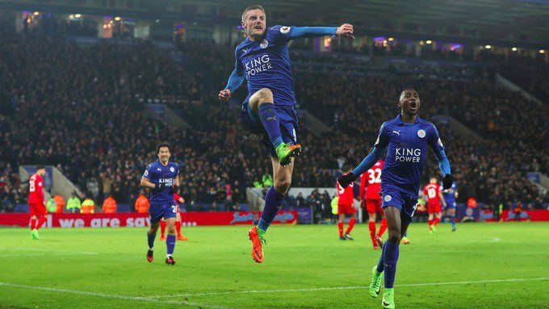

2.column的用法
 北京时间2017年2月28日4点，英超第26轮，红军利物浦做客皇权球场挑战蓝狐莱斯特城。上半场米尼奥莱连续扑出冈崎慎司与瓦尔迪近距离攻门，随后利物浦中场丢球，奥尔布莱顿助攻瓦尔迪单刀率先破门，德林克沃特凌空世界波破门。下半场，福克斯传中助攻瓦尔迪头球再入一球，随后埃姆雷-詹助攻库蒂尼奥推射破门扳回一球。莱斯特城主场3-1战胜利物浦。 本场比赛将是莱斯特城功勋教练拉涅利下课的首场比赛，目前莱斯特是由助理教练暂时带队，外界都十分关注拉涅利下课之后莱斯特城能拿出怎样的表现，今年能否顺利保级。新年以来红军利物浦的表现直线下滑，各项赛事12场比赛取得了3胜4平5负的尴尬战绩，一下滑落到了英超第五的位置。此次休整的两周时间正好可以让红军好好总结，调整好状态来迎接接下来更加激烈的英超抢分大战。此役，马内、菲尔米诺、库蒂尼奥同时首发。